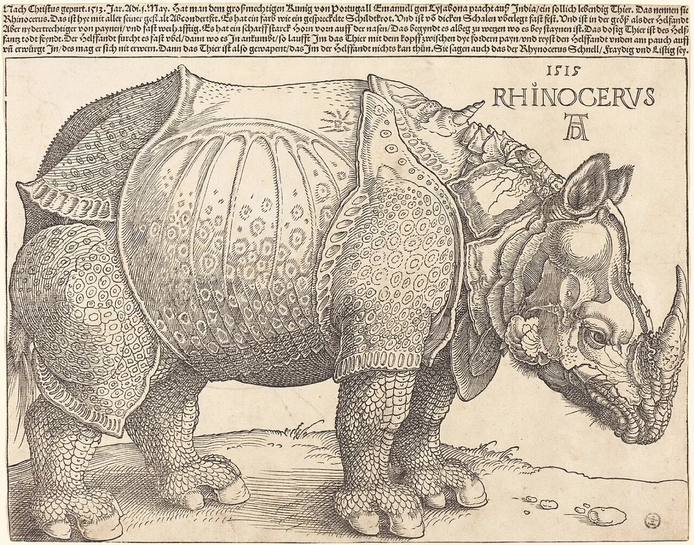
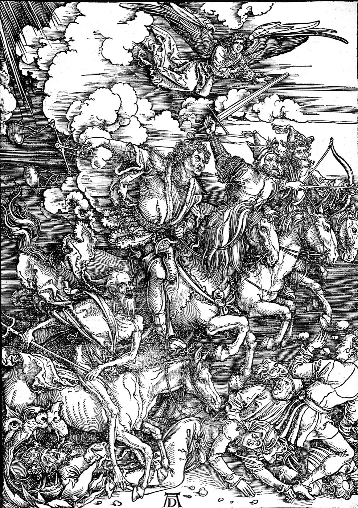
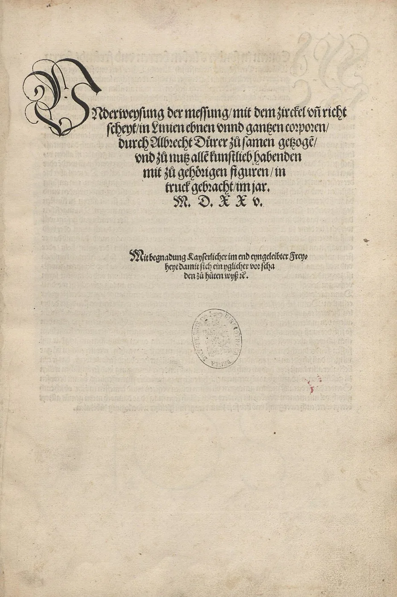

ARCHIV · 1471–1528 · Nuremberg
Albrecht DürerL'artiste qui a fait de l'image une science
Peintre, graveur, dessinateur et théoricien. Dürer a transformé l'image en une forme de connaissance reproductible, mesurée et transmissible — et a donné à la Renaissance du Nord son regard le plus précis.
 De la collection
Melencolia I
De la collection
Melencolia I
À propos de cette archive
Une image devenue langage de précision
Cette archive réunit la vie, l'œuvre, les gravures, les autoportraits, les voyages et les écrits théoriques d'Albrecht Dürer, et les organise autour d'une idée centrale : Dürer a transformé l'image en langage de précision, de transmission et de connaissance — mesurée par la main, multipliée par la presse, transmise à travers l'Europe.


02 — Les axes de l'œuvre
L'image,
rendue mesurable.
Cinq axes pour lire Dürer — le regard, la gravure, l'autoportrait, la science du trait et la circulation de l'œuvre à travers l'Europe.
Le regard
Observer le monde visible : corps, animaux, végétaux, textures et le moindre détail.
02La gravure
Faire de l'image un médium reproductible, européen et transmissible.
03L'autoportrait
Construire l'artiste comme auteur, figure et signature.
04La science du trait
Relier proportion, perspective, géométrie et pensée visuelle.
05La circulation
Faire voyager l'image par l'atelier, l'estampe, le monogramme et les réseaux européens.
Gravure
Melencolia I
Une figure ailée assise parmi des outils, un polyèdre et une horloge — l'estampe la plus commentée de l'histoire, où l'artisanat, les mathématiques et la métaphysique se rejoignent.
Lire la fiche Gravure
Gravure
Le Chevalier, la Mort et le Diable
Un chevalier avance, indifférent à la Mort et au démon qui l'escortent — l'une des trois estampes maîtresses, une épreuve morale fixée dans le métal.
Lire la fiche
BoisLe Rhinocéros
Un animal reconstitué d'après des récits, jamais vu par l'artiste — et pourtant l'image dominante de l'espèce pendant deux siècles.
Lire la fiche Peinture
Peinture
Autoportrait à vingt-huit ans
Un autoportrait frontal et hiératique qui revendique pour l'artiste la dignité jadis réservée aux figures sacrées.
Lire la fiche
BoisLes Quatre Cavaliers
La planche la plus violente du cycle de l'Apocalypse — l'œuvre qui porta la renommée de Dürer à travers l'Europe avant ses trente ans.
Lire la fiche
TraitéQuatre livres sur les proportions
L'œuvre ultime de Dürer : une géométrie systématique du corps humain, où le dessin devient mesure et la ligne devient preuve.
Science & proportionRepères historiques
Vie
Naissance & atelier
Voyages · 1494 & 1505
Dernier voyage · 1520
Panneau & retable
Burin & bois
Traités · 1525–1528
Le monogramme
Une œuvre où le regard devient méthode, et où la ligne devient connaissance.
ARCHIV · Note éditoriale
Essai
Dürer et la naissance de l'artiste moderne
Comment le fils d'un orfèvre de Nuremberg a fait de l'auctorialité un sujet en soi.
Lire dans l'archive →Estampe
La gravure comme technologie de transmission
La presse a transformé une image unique en événement européen.
Lire dans l'archive →Image
L'autoportrait comme acte de signature
Du panneau de 1493 à l'image frontale de 1500, un pacte avec le regardeur.
Lire dans l'archive →Science
Proportion, mesure et Renaissance du Nord
Là où le dessin rencontre la géométrie et le corps devient système.
Lire dans l'archive →Documentation
Sources & collections
Chaque planche renvoie aux collections publiques qui conservent les originaux, ainsi qu'à la méthode, l'inventaire et les droits ARCHIV.